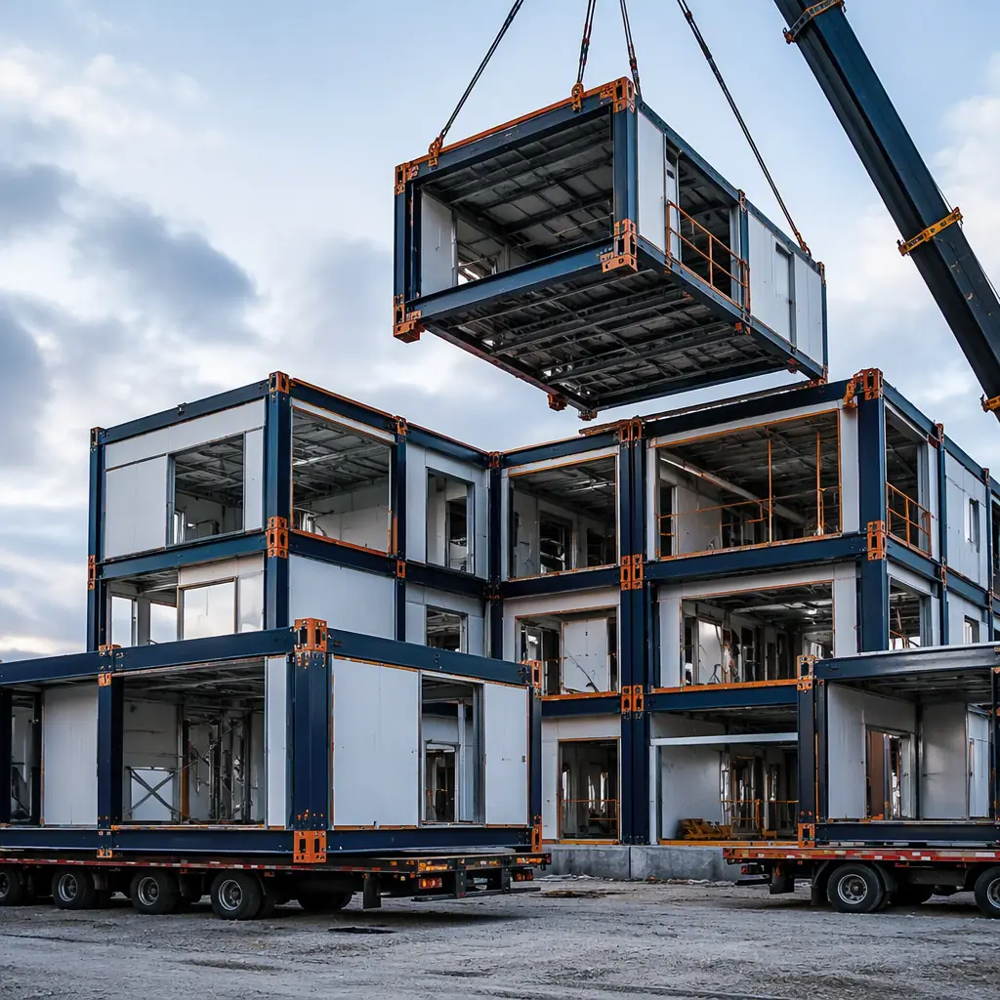
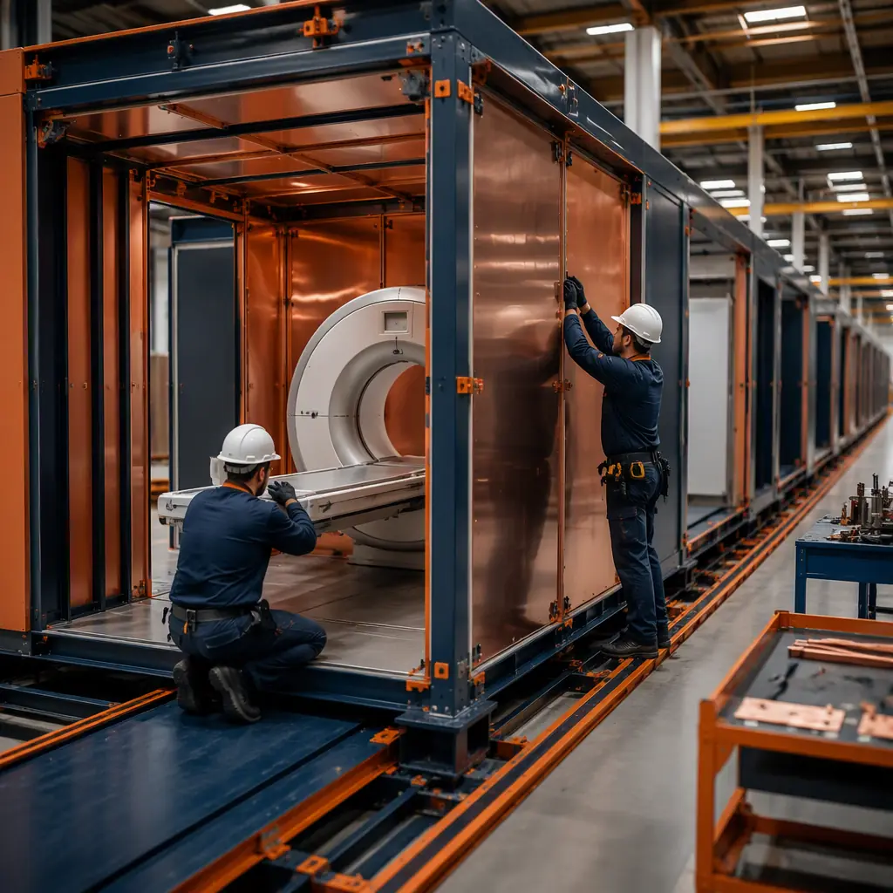
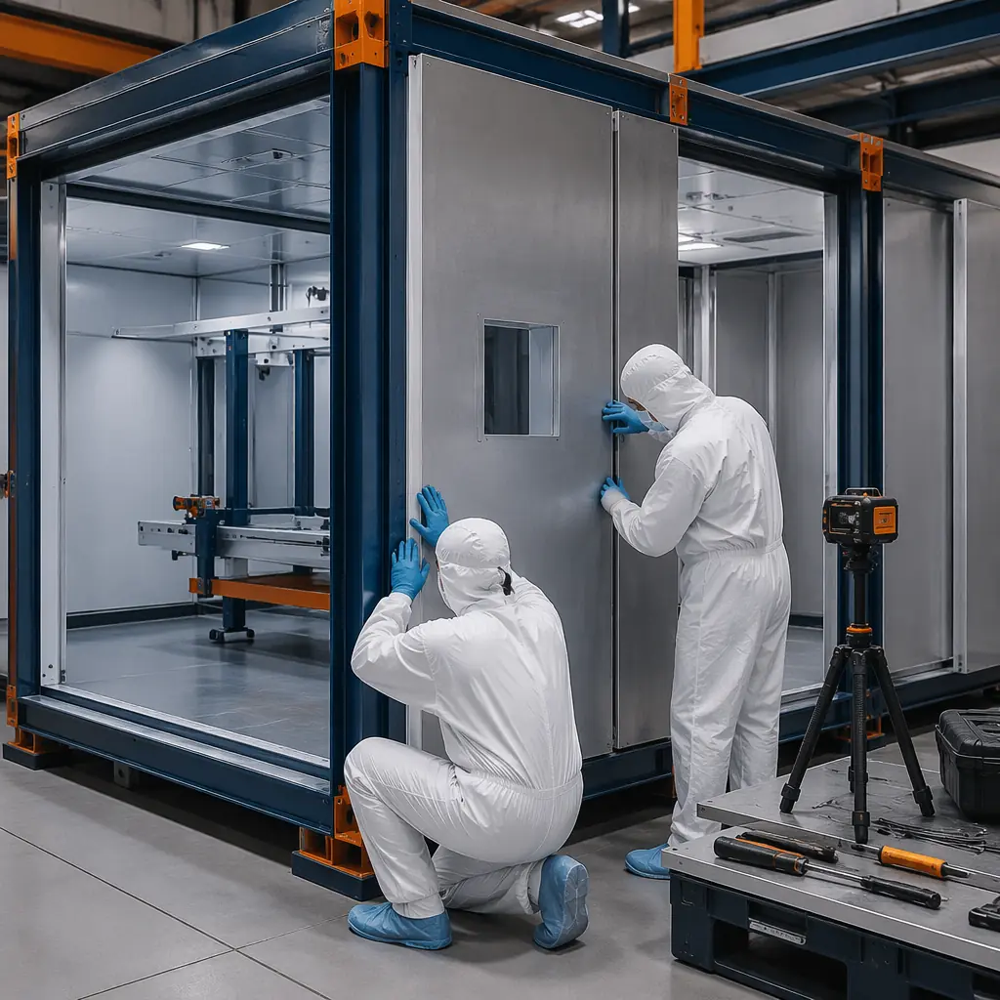

Diagnostic imaging is the single most technically demanding space in any healthcare facility. MRI suites require radiofrequency shielding with zero-gap tolerance. CT rooms need 1.6mm lead-equivalent protection and structural reinforcement for 2,000kg gantries. X-ray rooms demand precise beam alignment that a 3mm construction error can compromise. Traditional construction struggles to deliver this level of precision on-site — but factory-built modular construction was engineered for exactly this challenge. For healthcare systems building or expanding imaging capacity, modular delivery cuts timelines by 40–50% while achieving tolerances that field construction simply cannot match.

Why Imaging Centers Are the Ultimate Test of Construction Precision
An MRI suite isn't just a room with a machine in it. It's a precision-engineered envelope where six distinct systems must integrate perfectly: radiofrequency shielding (copper or steel, welded at every seam), magnetic shielding (6–10 tons of steel plate), vibration isolation (ground-borne vibration <2,000 µin/sec), cryogen venting (quench pipe routing through structure), HVAC (tight temperature control ±1°C), and structural support (5–7 ton magnet dead load). Get any one of these wrong and the room fails commissioning — a $50,000–$150,000 rework on a $3 million MRI installation.
In traditional construction, these systems are installed sequentially by different subcontractors over 12–18 weeks on a live construction site where dust, weather, and scheduling conflicts are constant. In modular construction, all six systems are integrated in a climate-controlled factory where every weld is inspected under shop lighting and every shield continuity test is completed before the module leaves the production line.

MRI Suites — Solving the Six-System Integration Problem
Magnetic resonance imaging demands the most complex construction of any medical space. The magnet's 1.5T or 3.0T field means that every piece of steel within the 5-gauss line must be non-ferrous or precisely accounted for — a single overlooked steel stud can create image artifacts that degrade diagnostic quality. Factory construction eliminates this risk: the module is built with documented non-ferrous materials, verified with a magnet check before leaving the factory.
RF shielding integrity. The copper or steel RF cage must be electrically continuous — one unsealed seam creates a leak that interferes with image acquisition. Factory welders achieve continuity test results of <0.1 ohm resistance across all seams on the first attempt, versus 30–40% first-pass failure rates for field-welded cages. Each module's RF cage is tested and certified before it enters the shipping envelope.
Vibration isolation. MRI magnets are extraordinarily sensitive to ground-borne vibration. A forklift driving past the building can ruin a scan. Modular MRI suites are built on isolated structural frames with elastomeric bearings, decoupled from the rest of the building structure. The isolation system is tuned and tested in the factory, not improvised in the field. For projects in seismic zones, see our guide to modular seismic design and earthquake-resistant construction for how these systems perform under lateral loads.
CT and X-Ray Rooms — Radiation Shielding with Zero Margin
CT and X-ray shielding is unforgiving: a 3mm gap in lead lining compromises the entire room. In traditional construction, lead sheets are hung on-site by drywall contractors, joints are overlapped, and inspectors pass or fail based on measurements taken after drywall is installed — when remediation means demolition. Modular factories install, overlap, and verify lead shielding on an open module frame where every joint is visible and testable. Typical factory tolerance: ±1.5mm on lead sheet placement. Field tolerance: ±15mm.
For broader healthcare facility planning, our guide to modular healthcare construction covers how these precision advantages extend across the full spectrum of medical buildings.

Cost and Timeline Comparison: Modular vs. Traditional Imaging Centers
The economics of modular imaging construction are compelling, particularly when accounting for the revenue impact of faster opening:
| Metric | Traditional | Modular | Advantage |
|---|---|---|---|
| MRI suite construction time | 16–20 weeks | 8–10 weeks on-site | 50% faster |
| Shielding first-pass success | 60–70% | 98%+ | Near-zero rework |
| Total project cost (3-room center) | $3.2–$4.5M | $2.6–$3.5M | 15–22% savings |
| Revenue acceleration (MRI @ $2,500/day) | Baseline | +$150,000–$225,000 | 8–12 weeks earlier revenue |
| Infection control during build | $200–$400/sqft ICRA | Minimal (factory-built) | Patient safety + cost |
PET/CT and Nuclear Medicine — The Next Frontier
PET/CT and SPECT-CT suites introduce an additional layer of complexity: radioactive isotope handling requires hot labs with negative pressure, shielded waste storage, and dedicated HVAC that doesn't recirculate to other occupied spaces. Modular construction solves this with pre-integrated mechanical systems — the hot lab's exhaust, supply, and pressure differential are commissioned in the factory before the module reaches the clinical site. Nuclear regulatory inspections also benefit: factory documentation of shielding installation and system commissioning provides a paper trail that regulators accept more readily than field-built documentation.
For facilities requiring cleanroom-grade environments adjacent to imaging — such as radiopharmaceutical preparation areas — our guide to modular lab and research facility construction covers cleanroom-class modular delivery.
Site Integration — Connecting Imaging Modules to Existing Hospitals
Most imaging center projects are additions to existing hospital campuses, not greenfield builds. The modular approach excels here: modules arrive with shielding, MEP, and finishes complete, requiring only corridor connections and utility tie-ins at the site. A three-room imaging center (MRI + CT + X-ray) can be craned into place over a single weekend, minimizing disruption to active hospital operations. For detailed logistics planning, consult our guide to modular construction crane and equipment logistics.
Traditional imaging center construction means 16 weeks of contractors, dust, and vibration directly adjacent to patient care areas. Modular delivery compresses on-site work to 2–3 weeks of connection and commissioning — the rest happens in our factory, 500 miles from your patients.
Is Modular Right for Your Imaging Project?
Modular delivery is particularly well-suited to imaging centers that meet these criteria:
- Multiple identical room types. A center with 2–3 MRI bays or CT rooms maximizes the factory production efficiency that drives cost savings.
- Constrained or active hospital site. Building on a campus where construction disruption carries patient safety risk makes offsite production the obvious choice.
- Aggressive timeline. Revenue from imaging services typically covers the construction premium within 6–12 months — so every week saved is revenue captured.
- Regulatory complexity. Jurisdictions with stringent radiation safety inspections benefit from factory-documented shielding installation.
- Future flexibility. Modular imaging suites can be designed for disassembly and relocation — see our guide to modular design for disassembly and relocation for how this works in practice.
Diagnostic imaging construction demands precision that traditional job sites cannot reliably deliver. Modular construction brings factory tolerances, integrated system testing, and timeline compression to the most technically challenging rooms in healthcare. As imaging technology advances — higher-field MRI, photon-counting CT, hybrid PET/MR — the construction precision requirements only increase, making modular delivery not just an option but the logical default for new imaging capacity. For a comprehensive look at how modular methods reduce total project cost across building types, see our 2026 modular construction cost per square foot guide.
Planning a diagnostic imaging center? Contact our team for a feasibility assessment on your imaging project. Our engineering team can review your MRI/CT equipment specifications and provide a modular delivery timeline and budget within 10 business days.